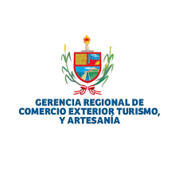
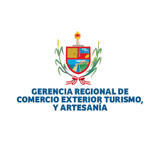

El Caballito de Totora
Una embarcación ancestral y una expresión de cultura viva, declarada Patrimonio Cultural de la Nación, originaria de la región de La Libertad, Perú.
Explora su legadoCaracterísticas Físicas y Composición
Construido con materiales naturales y con una técnica milenaria, el caballito de totora es un ejemplo de diseño funcional y ecológico.
Dimensiones
Longitud: 4.5 a 5 metros
Ancho: 0.60 a 1.00 metro
Altura: 0.40 metros
Peso y Capacidad
Con un peso aproximado de 50 kg, puede transportar a un pescador y su carga de pesca, demostrando su eficiencia.
Materiales
Elaborado artesanalmente con la planta acuática totora, ataduras naturales y un remo hecho de caña de Guayaquil.
Origen e Historia
Con más de 3,500 años de antigüedad, el caballito de totora es una de las embarcaciones más antiguas y hazañas de ingeniería marítima de América.
"Considerado uno de los primeros navíos del continente, ha sido una herramienta vital para la pesca en culturas como la Mochica y la Chimú."

"Los hallazgos arqueológicos en Pampas de Gramalote, en Huanchaco, han revelado que este es el origen geográfico de esta milenaria tradición."

"La tradición de su construcción y uso se ha mantenido viva, siendo un claro ejemplo de cómo el conocimiento ancestral se transmite de generación en generación."

Protección y Significado
El reconocimiento formal de esta tradición garantiza su continuidad y subraya su valor como pilar de la identidad regional.
Patrimonio Cultural de la Nación
Fue declarado como tal en 2003, un reconocimiento a su valor como una expresión cultural viva y una de las embarcaciones más antiguas de América.
Protección Legal
La Ley N° 30837 protege esta tradición ancestral, así como los humedales de totora en Huanchaco, asegurando los recursos para su elaboración.
Símbolo de Identidad
El caballito de totora es un emblema de la región, un símbolo de la resiliencia y la profunda conexión de los pobladores con el mar y sus raíces históricas.
Preguntas Frecuentes
Resolvemos algunas de las dudas más comunes sobre esta icónica embarcación.
Un caballito de totora bien construido y cuidado tiene una vida útil de aproximadamente un mes. Después de cada uso, los pescadores lo colocan en posición vertical para que se seque al sol y evitar que la totora se pudra.
Sí, aunque en menor medida que en el pasado. Hoy en día, su uso principal es para la pesca artesanal cerca de la costa en balnearios como Huanchaco. También es una gran atracción turística, y se ofrecen paseos a los visitantes.
Muchos historiadores y entusiastas del surf sostienen que la práctica de deslizarse sobre las olas con caballitos de totora es una de las formas más antiguas de surf en el mundo, precediendo a la versión polinesia por siglos. Los antiguos peruanos usaban las olas para regresar a la orilla después de pescar.